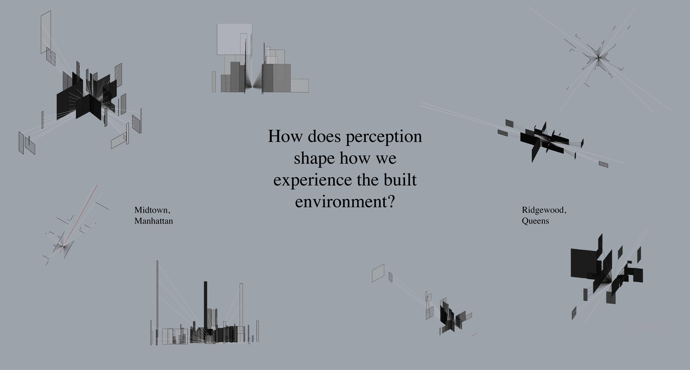

Perception and the Built Environment
This tool developed through Rhino and Grasshopper proposes an answer to this question by visualizing sight lines, the act of noticing, and near versus far perception. Applied across two urban contexts, Midtown, Manhattan and Ridgewood, Queens, this project opens up ways of thinking about perception through visualizations and metrics.
This tool casts ray to generate points of intersection from the origin point to the model, only visualizing the intersected surfaces. These surfaces are rendered on an opacity gradient based on their distance to the origin point to simulate our awareness of proximate buildings.